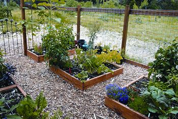

Country Lore: Sold On Square-Foot Gardening
Intensive use of garden space can result in prolific harvests.
By Monica Shomos
June/July 2008
My partner, Ron Taylor, and I recently constructed a green home on five acres near Dripping Springs, Texas. With it came the kind of space and sunlight perfect for serious gardening. We became interested in permaculture and attended a weekend workshop where we discovered a method called square-foot gardening (intensive soil improvement and close spacing of crops). I ran out to buy Square Foot Gardening by Mel Bartholomew, and we followed it to the letter!
After choosing the space and laying down weed cloth over the entire area, Ron leveled the earth and constructed three 4-foot-by-4-foot wood frames and a 17-foot-by-2-foot frame, each 8 inches deep. We filled the boxes with the “Square Foot” mix: one part mixed compost, one part vermiculite and one part peat moss. We used twine to mark off 1-foot squares in the beds. The garden is surrounded with a 5-foot-high hog wire fence to keep out the hungry deer that frequent our property.
Last summer we feasted on the following vegetables, all produced within an 85-square-foot area: squash, chard, chives, cantaloupe, cucumbers, lettuce, radishes, spinach, pole and bush beans, onions and garlic, three varieties of eggplants, seven kinds of tomatoes and four types of peppers. We also enjoyed many herbs and flowers. In Texas, we get two growing seasons. So in October we planted a new garden of greens, beets, snap peas, lettuces and carrots.
Since I left my job last year, this garden has been our pet project. Its manageable size makes it a joy to do all the gardening with a little trowel, a watering can and a pair of shears. It also allows the time to be playful and creative.
Having a square-foot garden has satisfied my Virgo tendencies to dig in the dirt and commune with nature, and encouraged Ron to reconnect with his love of photography. Now we have time to sit back and enjoy the bounty of the Earth.
Monica Shomos
Dripping Springs, Texas
|
 RON TAYLOR Nutritious soil and tight planting creates a bountiful harvest this “square-foot” garden. |
 RON TAYLOR Deer fencing helps to protect the garden from deer and other unwanted vegetable-eating critters. |
|